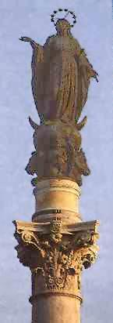
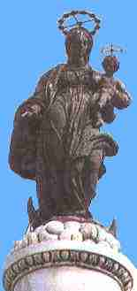
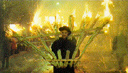

On the Roman Catholic Church calendar of holy days, December 8th is celebrated as a holy day of obligation, commemorating the Immaculate Conception of Mary. The observance of this feast began with a Papal encyclical by Pope Pius IX, when he formally defined the dogma of the Immaculate Conception, INEFFABILIS DEUS, on December 8, 1854.
Here is  INEFFABILIS DEUS online.
INEFFABILIS DEUS online.
To the Roman Catholic, December 8th is a significant date, not to be treated lightly. As a holy day of obligation, the Catholic is required by the first Precept of the Church to attend Mass. The days of obligation are set forth in the Vatican's Catechism in paragraph 2177.
According to the December 3rd, 1996 press release from the Vatican
Information Service, the papal schedule for December 8th, 1996 included the
following events:
|  |
Homage to statue of Mary On the afternoon of December 8, Pope John Paul II visited and paid homage to the statue of Mary located in the Spanish Square in Rome, which is pictured at left. Following the papal encyclical of Pius IX in 1854, the Column of the Immaculate Conception was erected near the Collegio Di Propaganda Fide (the Jesuit College for the propagation of the faith), at the southern end of the Piazza Di Spagna (Spanish Square). Designed by Luigi Poletti, it is an ancient Roman column topped by a statue of Mary, in honor of her Immaculate Conception. Ever since its dedication in 1857, it is a papal tradition to visit this monument on December 8th and crown the statue of Mary with a garland of flowers, following which the faithful would then place flowers at the base of the column in homage to the immaculate, sinless Mary. |
Pillars and obelisks are symbols associated in the Bible with pagan sun
worship or Baal worship.
See  The Sun
Wheel, the Obelisk and Baal.
The Sun
Wheel, the Obelisk and Baal.
Veneration of the Salus Populi Romani.
According to the Vatican Information Service press release, the next item on the papal itinerary was a visit to St. Mary Major Basilica (Santa Maria Maggiore) to venerate the image of Mary known as the "Salus Populi Romani," which is an icon depicting Mary and the Christ child, over the altar of the Pauline Chapel (Cappella Paolina).
Here is a link to  Salus Populi
Romani online.
Salus Populi
Romani online.
|  | This basilica, the Santa Maria Maggiore, originated from a dream
Pope Liberius had in 356 A.D. when he was told in the dream by the
Virgin Mary to build a church where he found snow. Miraculously, it is
said that Liberius next saw snow in the summer, on August 5th, on
Esquiline hill. The resulting church has also been known as the Liberian
Basilica. One of the central images in the apse is a mosaic portraying
the Coronation of the Virgin Mary as the "Queen of Heaven" by Jacopo
Torriti.
In 1615, Pope Paul V had a marble column removed from the basilica of Roman emperors Maxentius and Constantine, and re-erected it in the Piazza Santa Maria Maggiore immediately south of the basilica, and topped it with a statue of the Virgin Mary and Child. To the north of the basilica, in the Piazza dell' Esquilino, is an Egyptian obelisk erected by Pope Sixtus V in 1587, which is topped with a cross. |
Ndocciata Torchlight Procession.
Following his veneration of the images of Mary, the November 27th, 1996 Vatican Information Service press release stated that the Pope would be honored with a torchlight procession, that would proceed down the Via della Conciliazione, to St. Peter's Square.
The procession was led by folk groups from the area of Molise Italy, who carried 2,000 four-meter high lit torches of fir and broomwood, called "ndocce". The purpose of the event was to honor the 50th anniversary of the Pope's priesthood. The torchlight procession, described as an "extraordinary river of fire", ended under the study window of John Paul II, who then addressed the crowd.
 The VIS press release freely admitted that this "ndocciata" procession has its roots in pre-Christian (pagan) light (sun) worship. In the Molise region of Italy, this procession normally occurs on the 24th of December, in the town of Agnone to "honor" the birth of Jesus Christ. It was said by the VIS to be the largest Christmas event of its kind in Europe linked to light worship.
In the VIS press release of Sunday, December 8th 1996, the Pope is quoted as making the following remarks to the assembled multitude in St. Peter's square following the procession-
"you, shepherds and farmers, the protagonists of such a stupendous display of faith and culture, which anticipates the joyous announcement of the birth of the Lord. Your fathers, converting to the Christian faith, have transformed the ancient pagan rite of the solstitial fire, into a festive welcoming of Jesus, Light of the world."
The Pope has admitted the Ndocciata Torchlight Procession is utterly pagan in origin, originally honoring the Winter Solstice. This is a day of great significance to the sun worshipper, because it signals the "rebirth" of the sun. (The day of the Winter Solstice has the shortest amount of daylight in the year.) The Ndocciata actually celebrates the birth of the pagan sun god, and now the Roman Church maintains it has been Christianized to celebrate the birth of the Son of God.
Is this what the Bible teaches us? Are we to adopt pagan celebrations and practices and "baptize" them? Plain and simple, this is apostasy and corruption of the highest order. It is a mixing of sun worshipping paganism into the Church, doctrinal fornication, that provokes the Lord to great anger-
Judg 2:11 And the children of Israel did evil in the sight of the LORD, and served Baalim:
Judg 2:12 And they forsook the LORD God of their fathers, which brought them out of the land of Egypt, and followed other gods, of the gods of the people that were round about them, and bowed themselves unto them, and provoked the LORD to anger.
Judg 2:13 And they forsook the LORD, and served Baal and Ashtaroth.
Judg 2:14 And the anger of the LORD was hot against Israel, and he delivered them into the hands of spoilers that spoiled them, and he sold them into the hands of their enemies round about, so that they could not any longer stand before their enemies.
And what of Christmas itself? What is the origin of celebrating the birth
of Jesus Christ on December 25th? Does the Bible specify the date? Is it a
Biblical festival day? Please read  Celebrating
the Birth of the Sun.
Celebrating
the Birth of the Sun.
The Immaculate Conception
So, what of this festival of the Immaculate Conception of Mary? This dogma of the Roman Catholic Church states that Mary was conceived without sin, and that she never sinned throughout her entire life. What does the Bible say of this?-
Rom 3:10 As it is written, There is none righteous, no, not one:
Rom 3:11 There is none that understandeth, there is none that seeketh after God.
Rom 3:12 They are all gone out of the way, they are together become unprofitable; there is none that doeth good, no, not one.Rom 3:23 For all have sinned, and come short of the glory of God;
Rom 3:24 Being justified freely by his grace through the redemption that is in Christ Jesus:Rom 5:12 Wherefore, as by one man sin entered into the world, and death by sin; and so death passed upon all men, for that all have sinned:
Luke 1:46 And Mary said, My soul doth magnify the Lord,
Luke 1:47 And my spirit hath rejoiced in God my Saviour.
It follows that one who has not sinned has no need of a Saviour, but the Bible tells us that we have all sinned, there are none righteous, to include Mary, and she herself the Bible tells us, rejoiced in her Saviour. The dogma of Mary's Immaculate Conception and sinless life is not only unbiblical, but contradicts the clear teaching of the Bible.
Bowing Before Images
What of bowing down before graven images in veneration or homage of whoever the image represents? What does the Bible say of this?-
Exo 20:3 Thou shalt have no other gods before me.
Exo 20:4 Thou shalt not make unto thee any graven image, or any likeness of any thing that is in heaven above, or that is in the earth beneath, or that is in the water under the earth:
Exo 20:5 Thou shalt not bow down thyself to them, nor serve them: for I the LORD thy God am a jealous God, visiting the iniquity of the fathers upon the children unto the third and fourth generation of them that hate me;
The act of bowing down before graven images is expressly forbidden by scripture, yet in the Roman Catholic Church, it is common practice today.
Bowing before images and pre-Christian pagan torchlight processions, on a day that is to honor the unbiblical dogma of Mary's sinlessness - note this warning in which mixing truth and doctrinal error is called the wine of fornication-
Rev 14:8 And there followed another angel, saying, Babylon is fallen, is fallen, that great city, because she made all nations drink of the wine of the wrath of her fornication.
Rev 18:2 And he cried mightily with a strong voice, saying, Babylon the great is fallen, is fallen, and is become the habitation of devils, and the hold of every foul spirit, and a cage of every unclean and hateful bird.
Rev 18:3 For all nations have drunk of the wine of the wrath of her fornication, and the kings of the earth have committed fornication with her, and the merchants of the earth are waxed rich through the abundance of her delicacies.
Rev 18:4 And I heard another voice from heaven, saying, Come out of her, my people, that ye be not partakers of her sins, and that ye receive not of her plagues.
Rev 18:5 For her sins have reached unto heaven, and God hath remembered her iniquities.